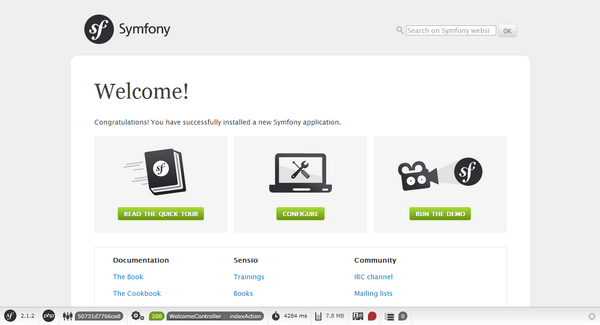
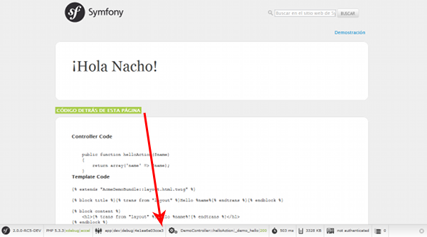

¡Empieza a usar Symfony2 en 10 minutos! Este capítulo te guiará a través de algunos de los conceptos más importantes detrás de Symfony2 y explica cómo puedes empezar a trabajar rápidamente, mostrándote un sencillo proyecto en acción.
Si ya has usado una plataforma para desarrollo web, seguramente te sentirás a gusto con Symfony2. Si no es tu caso, ¡bienvenido a una nueva forma de desarrollar aplicaciones web!
Truco
¿Quieres saber por qué y cuándo es necesario utilizar una plataforma? Lee el documento «Symfony en 5 minutos».
En primer lugar, comprueba que tienes instalado y configurado un servidor web (como Apache) con PHP 5.3.3 o superior.
Truco
Si tienes PHP 5.4, puedes usar el servidor web incorporado. El servidor incorporado se debe utilizar sólo para fines de desarrollo, pero te puede ayudar para iniciar tu proyecto sencilla y rápidamente.
Sólo tienes que usar esta orden para iniciar el servidor:
$ php -S localhost:80 -t /ruta/a/www
donde «/ruta/a/www» es la ruta a algún directorio de tu máquina en la que extrajiste Symfony por lo tanto la dirección final a tu aplicación es «http://localhost/Symfony/app_dev.php». También puedes extraer primero Symfony y luego iniciar el servidor web en el directorio «web» de Symfony. Si haces esto, la dirección URL de tu aplicación será «http://localhost/app_dev.php».
¿Listo? Empecemos descargando la «edición estándar de Symfony2», una distribución de Symfony preconfigurada para la mayoría de los casos y que también contiene algún código de ejemplo que demuestra cómo utilizar Symfony2 (consigue el paquete que incluye proveedores para empezar aún más rápido).
Después de extraer el paquete bajo el directorio raíz del servidor web, deberías tener un directorio Symfony/ con una estructura como esta:
www/ <- el directorio raíz de tu servidor web
Symfony/ <- el archivo desempacado
app/
cache/
config/
logs/
Resources/
bin/
src/
Acme/
DemoBundle/
Controller/
Resources/
...
vendor/
symfony/
doctrine/
...
web/
app.php
...
Nota
Si estás familiarizado con Composer, puedes ejecutar la siguiente orden en lugar de descargar el archivo:
$ composer.phar create-project symfony/framework-standard-edition ↓
ruta/donde/instalar dev-master
# elimina el historial de Git
$ rm -rf .git
Para una versión exacta, reemplaza dev-master con la versión más reciente de Symfony (por ejemplo, 2.1.1). Para detalles, ve la Página de instalación de Symfony
Truco
Si tienes PHP 5.4, puedes usar el servidor web integrado.
# comprueba la configuración de tu CLI PHP
$ php ./app/check.php
# ejecuta el servidor web integrado
$ php ./app/console server:run
Entonces la URL de tu aplicación será «http://localhost:8000/app_dev.php».
El servidor integrado sólo se debe usar para fines de desarrollo, pero te puede ayudar para iniciar tu proyecto fácil y rápidamente.
Symfony2 integra una interfaz visual para probar la configuración del servidor, muy útil para solucionar problemas relacionados con el servidor Web o una incorrecta configuración de PHP. Usa la siguiente URL para examinar el diagnóstico:
http://localhost/config.php
Nota
Todas las URL del ejemplo asumen que has descargado y descomprimido Symfony directamente al directorio raíz de tu servidor web. Si seguiste las instrucciones anteriores y descomprimiste Symfony en el directorio raíz de tu servidor web, entonces añade /Symfony/web después de localhost a todas las URL que veas:
http://localhost/Symfony/web/config.php
Si se listan errores o aspectos de configuración pendientes, corrígelos; Puedes realizar los ajustes siguiendo las recomendaciones. Cuando todo esté bien, haz clic en «Pospón la configuración y llévame a la página de bienvenida» para solicitar tu primera página web «real» en Symfony2:
http://localhost/app_dev.php/
¡Symfony2 debería darte la bienvenida y felicitarte por tu arduo trabajo hasta el momento!
Uno de los principales objetivos de una plataforma es garantizar la separación de responsabilidades. Esto mantiene tu código organizado y permite a tu aplicación evolucionar fácilmente en el tiempo, evitando mezclar llamadas a la base de datos, etiquetas HTML y código de la lógica del negocio en un mismo archivo. Para alcanzar este objetivo, debes aprender algunos conceptos y términos fundamentales.
Truco
¿Quieres más pruebas de que usar una plataforma es mucho mejor que mezclar todo en un mismo archivo? Lee el capítulo del libro «Symfony2 frente a PHP simple».
La distribución viene con algún código de ejemplo que puedes utilizar para aprender más sobre los principales conceptos de Symfony2. Ingresa a la siguiente URL para recibir un saludo de Symfony2 (reemplaza Nacho con tu nombre):
http://localhost/app_dev.php/demo/hello/Nacho
¿Qué sucedió? Bien, diseccionemos la URL:
Tu responsabilidad como desarrollador es escribir el código que asigna la petición del usuario (/demo/hello/Nacho) al recurso asociado con ella (la página HTML ¡Hola Nacho!).
Symfony2 encamina la petición al código que la maneja tratando de hacer coincidir la URL solicitada contra algunos patrones configurados. De forma predeterminada, estos patrones (llamados rutas) se definen en el archivo de configuración app/config/routing.yml: Cuando estás en el entorno dev —indicado por el controlador frontal app_dev.php— también se carga el archivo de configuración app/config/routing_dev.yml. En la edición estándar, las rutas a estas páginas de «demostración» se encuentran en ese archivo:
# app/config/routing_dev.yml
_welcome:
pattern: /
defaults: { _controller: AcmeDemoBundle:Welcome:index }
_demo:
resource: "@AcmeDemoBundle/Controller/DemoController.php"
type: annotation
prefix: /demo
# ...
Las primeras tres líneas (después del comentario) definen el código que se ejecuta cuando el usuario solicita el recurso «/» (es decir, la página de bienvenida que viste anteriormente). Cuando así lo solicites, el controlador AcmeDemoBundle:Welcome:index será ejecutado. En la siguiente sección, aprenderás exactamente lo que eso significa.
Truco
La edición estándar de Symfony2 utiliza YAML para sus archivos de configuración, pero Symfony2 también es compatible con XML, PHP y anotaciones nativas. Los diferentes formatos son compatibles y se pueden utilizar indistintamente en una aplicación. Además, el rendimiento de tu aplicación no depende del formato de configuración que elijas, ya que todo se memoriza en caché en la primer petición.
«Controlador» es un nombre elegante para una función o método PHP que se encarga de las peticiones entrantes y devuelve las respuestas (a menudo código HTML). En lugar de utilizar variables globales y funciones PHP (como $_GET o header()) para manejar estos mensajes HTTP, Symfony utiliza objetos: Symfony\Component\HttpFoundation\Request y Symfony\Component\HttpFoundation\Response. El controlador más simple posible crea la respuesta a mano, basándose en la petición:
use Symfony\Component\HttpFoundation\Response;
$name = $request->query->get('name');
return new Response('Hello '.$name,
200,
array('Content-Type' => 'text/plain')
);
Nota
Symfony2 abarca la especificación HTTP, esta contiene las reglas que gobiernan todas las comunicaciones en la web. Lee el capítulo «Symfony2 y fundamentos HTTP» del libro para aprender más acerca de esto y la potencia que ello conlleva.
Symfony2 elige el controlador basándose en el valor del _controller de la configuración de enrutado: AcmeDemoBundle:Welcome:index. Esta cadena es el nombre lógico del controlador, y hace referencia al método indexAction de la clase Acme\DemoBundle\Controller\WelcomeController:
// src/Acme/DemoBundle/Controller/WelcomeController.php
namespace Acme\DemoBundle\Controller;
use Symfony\Bundle\FrameworkBundle\Controller\Controller;
class WelcomeController extends Controller
{
public function indexAction()
{
return $this->render('AcmeDemoBundle:Welcome:index.html.twig');
}
}
Truco
Podrías haber usado el nombre completo de la clase y método —Acme\DemoBundle\Controller\WelcomeController::indexAction— para el valor de _controller. Pero si sigues algunas simples convenciones, el nombre lógico es más conciso y te permite mayor flexibilidad.
La clase WelcomeController extiende la clase integrada Controller, la cual proporciona útiles atajos a métodos, como el render() que carga y reproduce una plantilla (AcmeDemoBundle:Welcome:index.html.twig). El valor devuelto es un objeto Respuesta poblado con el contenido reproducido. Por lo tanto, si surge la necesidad, la Respuesta se puede ajustar antes de enviarla al navegador:
public function indexAction()
{
$response = $this->render('AcmeDemoBundle:Welcome:index.txt.twig');
$response->headers->set('Content-Type', 'text/plain');
return $response;
}
Pero en todos los casos, el trabajo final del controlador es devolver siempre el objeto Respuesta que será entregado al usuario. Este objeto Respuesta se puede poblar con código HTML, representar una redirección al cliente, e incluso devolver el contenido de una imagen JPG con una cabecera Content-Type de image/jpg.
Truco
Derivar de la clase base Controller es opcional. De hecho, un controlador puede ser una simple función PHP e incluso un cierre PHP. El capítulo «Controlador» del libro abarca todo sobre los controladores de Symfony2.
El nombre de la plantilla, AcmeDemoBundle:Welcome:index.html.twig, es el nombre lógico de la plantilla y hace referencia al archivo Resources/views/Welcome/index.html.twig dentro del AcmeDemoBundle (ubicado en src/Acme/DemoBundle). En la sección paquetes, a continuación, explicaré por qué esto es útil.
Ahora, de nuevo echa un vistazo a la configuración de enrutado y encuentra la clave _demo:
# app/config/routing_dev.yml
_demo:
resource: "@AcmeDemoBundle/Controller/DemoController.php"
type: annotation
prefix: /demo
Symfony2 puede leer/importar la información de enrutado desde diferentes archivos escritos en YAML, XML, PHP o, incluso, incorporada en anotaciones PHP. En este caso, el nombre lógico del recurso es @AcmeDemoBundle/Controller/DemoController.php y se refiere al archivo src/Acme/DemoBundle/Controller/DemoController.php. En este archivo, las rutas se definen como anotaciones sobre los métodos de acción:
// src/Acme/DemoBundle/Controller/DemoController.php
use Sensio\Bundle\FrameworkExtraBundle\Configuration\Route;
use Sensio\Bundle\FrameworkExtraBundle\Configuration\Template;
class DemoController extends Controller
{
/**
* @Route("/hello/{name}", name="_demo_hello")
* @Template()
*/
public function helloAction($name)
{
return array('name' => $name);
}
// ...
}
La anotación @Route() define una nueva ruta con un patrón de /hello/{name} que ejecuta el método helloAction cuando concuerda. Una cadena encerrada entre llaves como {name} se conoce como marcador de posición. Como puedes ver, su valor se puede recuperar a través del argumento $name del método.
Nota
Incluso si las anotaciones no son compatibles nativamente en PHP, las utilizamos profusamente en Symfony2 como una conveniente manera de configurar el comportamiento de la plataforma y mantener la configuración del lado del código.
Si echas un vistazo más de cerca al código de la acción del controlador, puedes ver que en lugar de reproducir una plantilla y devolver un objeto Respuesta como antes, sólo devuelve un arreglo de parámetros. La anotación @Template() le dice a Symfony que reproduzca la plantilla por ti, pasando cada variable del arreglo a la plantilla. El nombre de la plantilla reproducida sigue al nombre del controlador. Por lo tanto, en este ejemplo, se reproduce la plantilla AcmeDemoBundle:Demo:hello.html.twig (ubicada en src/Acme/DemoBundle/Resources/views/Demo/hello.html.twig).
Truco
Las anotaciones @Route() y @Template() son más poderosas que lo mostrado en el ejemplo simple de esta guía. Aprende más sobre las «anotaciones en controladores» en la documentación oficial.
El controlador procesa la plantilla src/Acme/DemoBundle/Resources/views/Demo/hello.html.twig (o AcmeDemoBundle:Demo:hello.html.twig si utilizas el nombre lógico):
{# src/Acme/DemoBundle/Resources/views/Demo/hello.html.twig #}
{% extends "AcmeDemoBundle::layout.html.twig" %}
{% block title "Hello " ~ name %}
{% block content %}
<h1>Hello {{ name }}!</h1>
{% endblock %}
Por omisión, Symfony2 utiliza Twig como motor de plantillas, pero también puede utilizar plantillas PHP tradicionales si lo deseas. El siguiente capítulo es una introducción a cómo trabajan las plantillas en Symfony2.
Posiblemente te hayas preguntado por qué la palabra bundle (paquete en adelante), se utiliza en muchos de los nombres que hemos visto hasta ahora. Todo el código que escribas para tu aplicación está organizado en paquetes. Hablando en Symfony2, un paquete es un conjunto estructurado de archivos (archivos PHP, hojas de estilo, JavaScript, imágenes, ...) que implementa una sola característica (un blog, un foro, ...) y que fácilmente se puede compartir con otros desarrolladores. Hasta ahora, solo has manipulado un paquete, AcmeDemoBundle. Aprenderás más acerca de los paquetes en el último capítulo de esta guía.
Ahora que tienes una mejor comprensión de cómo funciona Symfony2, dale una mirada más atenta a la parte inferior de cualquier página reproducida por Symfony2. Deberás notar una pequeña barra con el logotipo de Symfony2. Esta se conoce como la «barra de depuración web» y es la mejor amiga del desarrollador.
Pero lo que ves al principio es sólo la punta del iceberg; haz clic en el extraño número hexadecimal para revelar otra muy útil herramienta de depuración de Symfony2: el generador de perfiles.

Nota
Puedes conseguir más información rápidamente manteniendo el puntero del ratón sobre los elementos en la barra de depuración Web.
Por supuesto, no querrás mostrar estas herramientas al desplegar tu aplicación en producción. Es por eso que encontrarás otro controlador frontal en el directorio web/ (app.php), el cual está optimizado para el entorno de producción:
http://localhost/app.php/demo/hello/Fabien
Y si utilizas Apache con mod_rewrite habilitado, incluso puedes omitir la parte app.php de la URL:
http://localhost/demo/hello/Nacho
Por último pero no menos importante, en los servidores en producción, debes apuntar tu directorio web raíz al directorio web/ para proteger tu instalación e incluso, para que tus URL tengan un mejor aspecto:
http://localhost/demo/hello/Nacho
Nota
Ten en cuenta que las tres direcciones URL anteriores sólo se proporcionan aquí como ejemplos de cómo se ve una URL al utilizar el controlador frontal de producción (con o sin mod_rewrite). Si realmente lo intentas en una instalación de la edición estándar de Symfony, fuera de la caja obtendrás un error 404 puesto que AcmeDemoBundle sólo se activa en el entorno de desarrollo e importa sus rutas en app/config/routing_dev.yml.
Para hacer que tu aplicación responda más rápido, Symfony2 mantiene una caché en el directorio app/cache/. En el entorno de desarrollo (app_dev.php), esta caché se vacía automáticamente cada vez que realizas cambios en cualquier código o configuración. Pero ese no es el caso en el entorno de producción (app.php) donde el rendimiento es clave. Es por eso que siempre debes utilizar el entorno de desarrollo al estar desarrollando tu aplicación.
Diferentes entornos de una determinada aplicación sólo se diferencian en su configuración. De hecho, una configuración puede heredar de otra:
# app/config/config_dev.yml
imports:
- { resource: config.yml }
web_profiler:
toolbar: true
intercept_redirects: false
El entorno dev (el cual carga el archivo de configuración config_dev.yml) importa el archivo global config.yml y luego lo modifica, en este ejemplo, activando la barra de herramientas para depuración web.
¡Enhorabuena! Has tenido tu primera experiencia codificando en Symfony2. No fue tan difícil, ¿cierto? Hay mucho más por explorar, pero ya debes tener una idea de cómo Symfony2 facilita la implementación de mejores y más rápidos sitios web. Si estás interesado en aprender más acerca de Symfony2, sumérgete en la siguiente sección: «La vista».